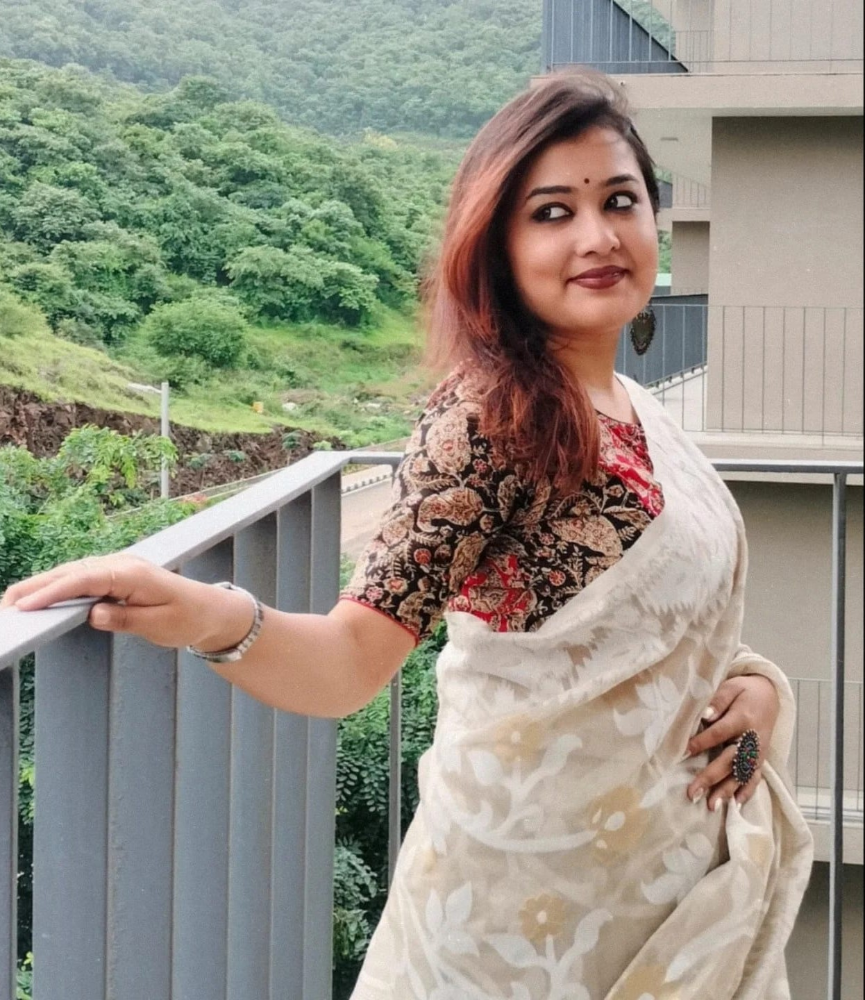

Refractions
The Institute Journey
- Sambhavya Ghosh Chowdhury
Introduction
When I first decided to join the Teach For India Fellowship, I thought I was signing up for just another teaching program, but the Training Institute quickly showed me otherwise—it was a transformative space that challenged me deeply, not just as a future educator but as a person. It opened my eyes to the layers of my own privilege, pushed me to respect my own values and taught me the true meaning of collaboration. Surrounded by people driven by purpose, I began to understand that this journey wasn’t just about teaching, but it was about building a better, more just India from the inside out. It was a soulful ride, a mirror held up to who I am and who I want to become. The days at the institute stirred something deep within me—a calling to Lead with Love, to stand up for every child’s Right to a brighter future and to walk this path not alone, but Together.
Contents
Community Visit
As a Teach For India fellow, my first visit to the Panmala community in Dattawadi, Pune was more than just a field experience. It was a journey into the heart of our children’s lived realities. I had always known, in theory, that understanding the community is essential to understanding the child, but being there brought that truth to life in the most powerful way. The narrow paths, the small homes and the welcoming smiles painted a vivid picture of resilience. It was a deeply moving experience to connect with children not just as the kind of children I would be teaching in my classroom, but as individuals shaped by their unique contexts and challenges. I was surprised to see that many children were being raised by their grandparents, with many that have only one living parent. Their early education happens at the local Anganwadi, a small learning space nestled within the community, while the older children walk to nearby schools. What stood out to me the most was the language barrier, where many children only spoke Marathi or Kannada, and yet, despite that, the joy with which they interacted, played and supported one another reminded me that human connection surpasses language. Even more heartening was the quiet but clear determination among parents. Despite the hardships of poverty, limited resources and the fact that most of these children are first-generation learners, parents expressed a strong desire for their children to study and lead lives better than their own. One moment that particularly inspired me was meeting a young woman in her second year of college, preparing to become a police officer, a dream she pursued with fierce clarity despite the odds stacked against her. Yet, beneath the smiles and the everyday hustle, I witnessed the tough conditions that so many children grow up in. Homes with limited space, lack of consistent access to learning materials and the absence of quiet, safe environments to study in. It was a reminder that academic challenges often have deep-rooted social causes, but more than anything, what the children seemed to need was someone to truly see them: to offer them love, compassion and a safe space to be vulnerable without judgment. Visiting the Panmala Community didn’t just deepen my understanding of children, but it redefined the way I see my role as an educator. I learnt a very important thing, that when we begin to meet children not just with lesson plans, but with empathy, presence and belief, we open doors to transformation that extend far beyond the classroom.
School Visit
Before stepping into the schools, I had assumptions: images shaped by secondhand stories and theory. However, the moment I walked into K.C. Thackeray Vidya Niketan on the first day, those assumptions began to shift. I was genuinely taken aback by the quiet discipline and structure I witnessed right from the morning assembly as the children lined up, participated mindfully and dispersed without any teacher needing to step in. Inside the KG classroom, I experienced my first Morning Meeting, where the teacher led the class in revisiting the norms and engaging the children with light exercises. It wasn’t just about routine, but it was intentional, warm and full of care. A child who needed special support was gently guided to sit in the front, and the teachers watched each student with a kind of attention that felt deeply human. They didn’t just react to behavior, but they tried to understand its roots. During our conversation with Shalini didi, I saw what it means to lead a classroom with compassion, structure and a deep sense of purpose. On the second day, our visit to Late Anantrao Pawar Memorial School opened another dimension of learning. We engaged in conversations with parents, mostly mothers, and I was deeply moved by their involvement in the children’s education. Far from being passive participants, these women were leaders in their own right: actively contributing to school activities and even co-creating a recipe book that celebrated their very own nutritious recipes. It was a reminder that education is a shared journey and that real transformation takes root when families, schools and communities come together. On the final day, our visit to Anusyabai School was filled with joy, energy and insight. Here, teachers used vernacular languages, Hindi and Marathi, not only as a medium of instruction but as a bridge to connection and understanding. The classroom pulsed with rhythm and movement; dance and audiovisual tools were integrated to make learning more engaging and inclusive. But what struck me most was a small, quiet moment: a teacher walking around during lunch break, asking each child what they had brought to eat, making mental notes and checking in on their nutrition. It wasn’t just about food, it was about care and ensuring each child felt noticed and valued. These three visits, though brief, transformed the way I view education. They reminded me that teaching is not just about lessons in designated classrooms, but it's about relationships, empathy and a community that holds children with both high expectations and deep love.
Leading Self
What drew me to the Teach For India Fellowship was a deep and personal commitment to justice, especially in the realm of educational equity. From a young age, I was struck by how uneven the playing field was for children in our country and I couldn’t accept that a child’s potential could be limited by circumstances they were born into. Since middle school, I’ve been teaching students from the Rainbow Homes Foundation at my school every week. Those sessions, though informal, became the most meaningful part of my week. I wasn’t just helping them with academics; I was building relationships, learning about their dreams and realizing the powerful role a mentor can play in a child’s life. I discovered how much I love being around children, their energy, their curiosity, their resilience, and how deeply fulfilling it is to connect with them, celebrate their small wins and simply share joy. There’s a unique sense of purpose that comes from knowing you're contributing to a child's growth and future, no matter how small the gesture. Over time, that purpose grew into a calling. I joined the Teach For India Fellowship because I wanted to commit myself fully to this cause, to not just support children on the margins, but to walk alongside them every day, advocating for their right to learn, to dream and to thrive. For me, this isn’t just about teaching; it’s about standing up for equity, building nurturing spaces where children feel seen and valued and believing,truly believing, that every child has the potential to shine.
Leading Others
The Teach For India Institute training journey has been one of the most transformative experiences of my life, emotionally, intellectually and spiritually. Walking into the Fellowship, I already carried a strong sense of justice and a passion for working with children, but the Institute helped me ground those ideals in reality. Through immersive school visits, I witnessed firsthand the complexity of our education system where classrooms are packed with energy and potential, but also weighed down by systemic challenges like resource gaps, learning deficits and inner struggles. Interacting with children in these spaces wasn’t just about understanding their academic levels, but also about observing how they are learning despite odds, their warmth and their incredible resilience in the face of adversity. It taught me that while love and joy are essential in the classroom, so is structure, intentionality and an unwavering belief in every child’s potential. The community visit was perhaps the most eye-opening part of Institute. Sitting with families, understanding their lived realities and seeing the strength it takes to survive and dream in the face of generational injustice moved something within me. I realized that educational equity isn’t just about what happens inside a classroom, it’s about seeing the whole child, including the struggles they carry from home. It made me reflect on my own privilege and deepened my empathy. The stories of sacrifice, perseverance and hope have stayed with me and they fuel my commitment every day. Through rigorous training sessions, real-time feedback and the constant support of mentors and peers, I’ve started to evolve from someone who loves teaching to someone who is learning to lead change. The Institute didn’t just equip me with tools for lesson planning and classroom management, but it challenged me to unlearn, to sit with discomfort and to reimagine what justice looks like in a child’s life. It gave me a vision, not just of what kind of educator I want to be, but what kind of person I want to become.
Leading India
Content Goes Here